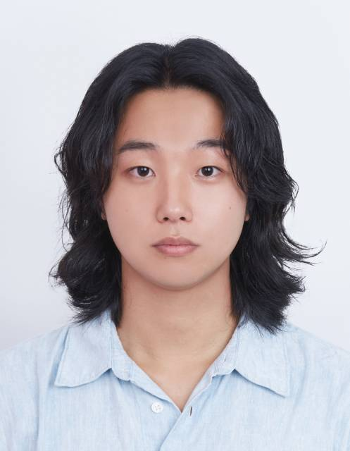

Hi, I'm Wonje Heo. I received my M.S. degree from the Department of Electrical Engineering & Computer Sciences (EECS) at DGIST, South Korea. I conducted my research under the supervision of Prof. Donghoon Shin at the DGIST Computer Theory and Application Lab.
Previously, I earned a B.S. degree from the School of Undergraduate Studies, DGIST, in 2024, and I was fortunate to study as a student at UC Berkeley and George Washington University. During my undergraduate studies, I also conducted research under Prof. Yoori Kim at the YK Laboratory, where I studied Epigenetics and contributed to a paper related to DNA stretching techniques.
My research focuses on inferring hidden structures, processing histories, and distribution pathways from observed digital signals, including network traffic, industrial sensor time-series, audio signals, and multimedia data. By connecting cybersecurity, signal forensics, and representation learning, I aim to develop interpretable methods for revealing signal provenance, operational context, and hidden transformation processes in security-critical digital environments.

Outside of research, I enjoy traveling, rock music, and soccer. Exploring new cities and cultures inspires creativity in my academic work.